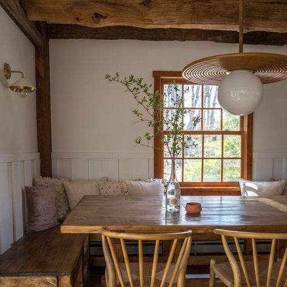
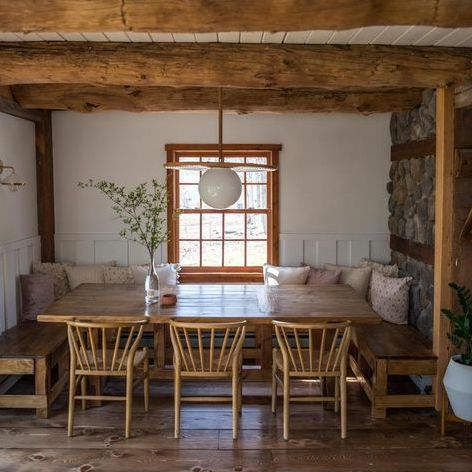
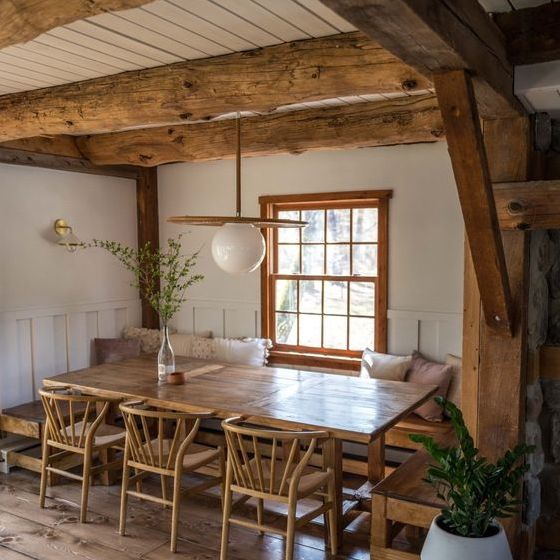
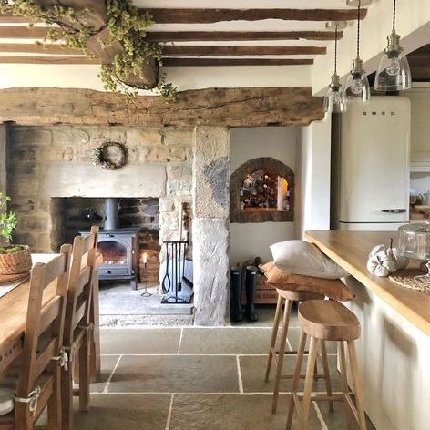
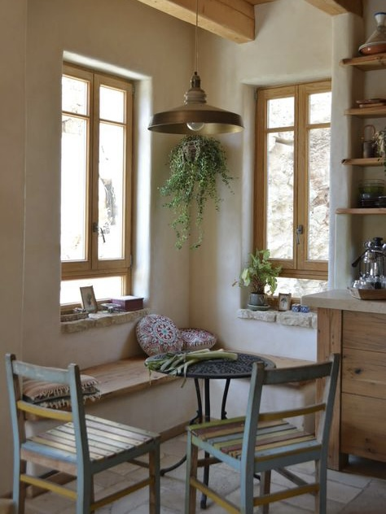
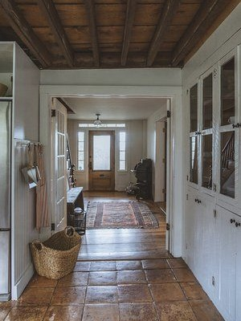
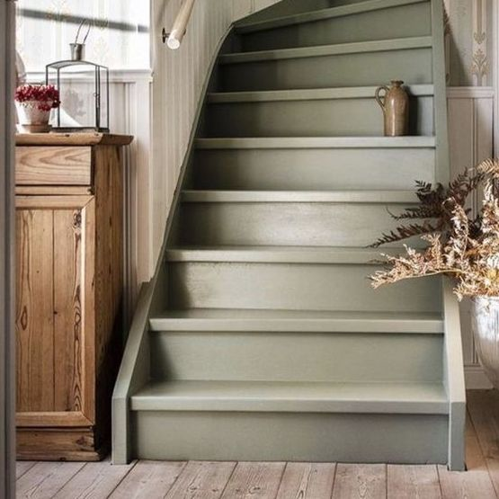
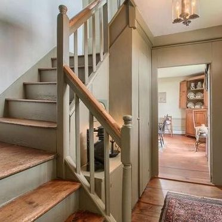
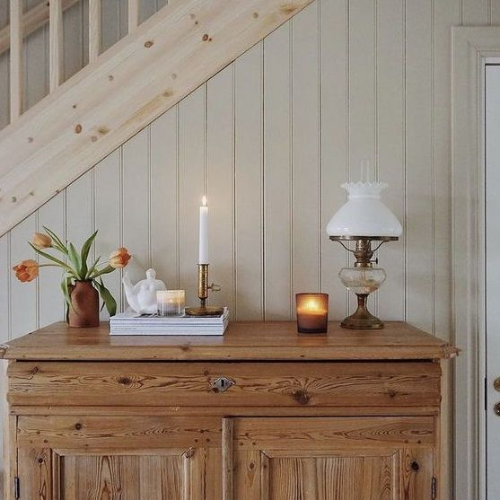
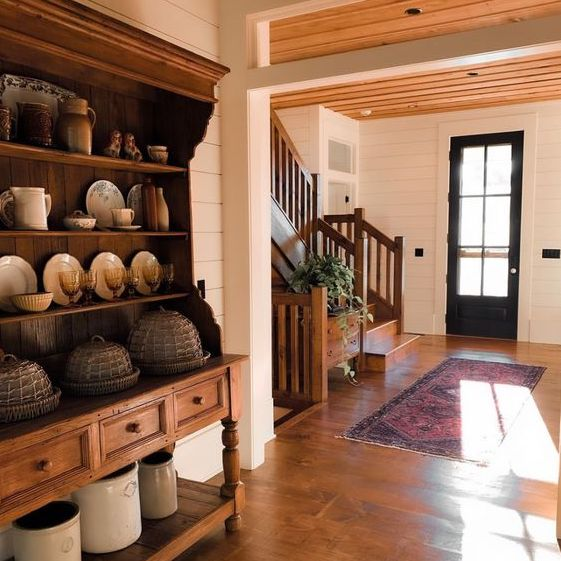
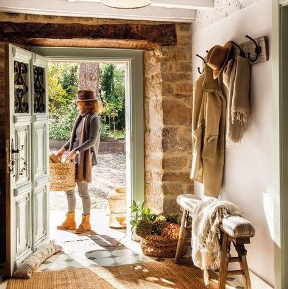
Unser Wohnbereich:
- Das Ergeschoss unseres Bed and Breakfast ist der größte Bereich. Bis auf die Küche, ein privater Bereich, der Keller
und die beiden Schlafzimmer ist der gesamte Bereich gemeinschaftlich.
- So ermöglichen wir ihnen außerhalb ihres Zimmers und auch bei schlechtem Wetter genügend Freiraum zu haben.
- In unserem Haus soll man nicht nur schlafen und essen während eine Urlaubes, sondern auch arbeiten, lesen oder einfach abschalten können.
- So haben wir für die kalten Jhareszeiten einen Kamin und die wärmeren Tage eine Terasse und einen kleinen Garten.
- Der Wohnbereich teilt sich in eine große Sitzecke für Familien, einen weiteren Tisch, einer Bar, wo auch das Frühstücksbuffet steht und einem kleinen Ecktisch.
- Durch den Flur kommen sie bei Ihrer Ankunft sowie, wenn sie in den Garten möchten und zu den Treppen, die nach oben führen.